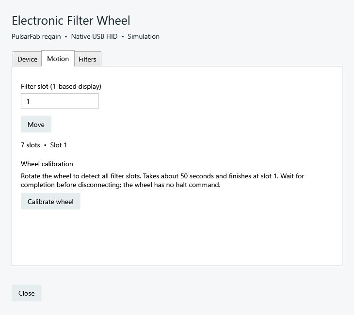

regain documentation
Native Windows ASCOM
Local camera and accessory drivers with matching setup dialogs, for both 32-bit and 64-bit clients.
The native drivers launch local Rust workers. They do not connect through an Alpaca bridge and do not require an Alpaca server.
Install and connect
- Install the requirements listed in Install & upgrade.
- Download the regain ASCOM setup executable from the release page. Close device-control apps and running Alpaca servers, then run the installer as administrator.
- In your application’s ASCOM Chooser, select a regain camera, CAA rotator, EFW filter wheel, EAF focuser, or Pegasus FocusCube3.
- Open Setup, refresh devices, select the physical device, and configure its settings. Close setup and connect from your application.
The Start menu contains camera and accessory setup shortcuts. Four camera entries provide independent settings: Retryable Camera 1 through 4. Configure cameras 2–4 from their own Chooser entries.
Matching controls
Camera setup groups device selection, recovery, cooler, and timeout settings. Accessory dialogs expose device selection, motion, and device settings in the same style. Standalone dialogs use a light theme; NINA-hosted controls inherit its theme.
{kind=link}

FocusCube3 sharing
FocusCube3 uses one out-of-process COM server across 32-bit and 64-bit applications. Each client has its own connection lease; disconnecting one leaves the others connected. This sharing does not extend to native NINA, Alpaca, or Unity. See FocusCube3 setup.
Portable registration
Extract the complete ASCOM ZIP to a permanent folder. In an administrator PowerShell opened there:
$p = Start-Process .\Regain.ASCOM.Register.exe -ArgumentList /regserver -Wait -PassThru
if ($p.ExitCode) { throw 'Registration failed; check the registration log' }Use /unregserver before deleting a portable install. Keep assemblies, Rust workers, and SDK libraries together. The old ASCOM.ZWOgain.* ProgIDs are intentionally preserved for compatibility.
Updates and validation
The installer refuses to replace files in use. No background service or firewall rule is installed automatically. Settings survive upgrades and uninstall. Automated COM and simulator checks cover both client bitnesses; a full ASCOM ConformU run remains outstanding.